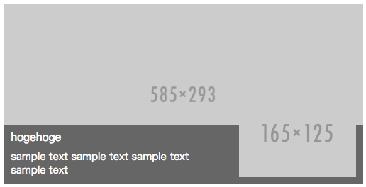
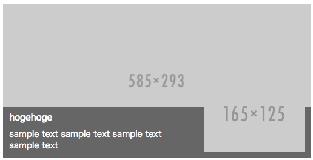

## コンポーネントベースの
Webサイト制作
#### メンテナンス案件、中、大規模案件向き
有限会社アップルップル 堀 悟大
## 今日お話しすること
- コンポーネントとは
- コンポーネントベースにすることのメリット
- コンポーネントベースで開発するには
- まとめ
## コンポーネントとは
HTML/CSS/JavaScriptをセットで部品化すること
## たとえば
```html
 ```
### 見た目や動作がある程度保障されている
## GET_Template
```html
```
# caption-box

実際にデータが入ってくると
[http://www.nucba.ac.jp/nisshin/dormitory/](http://www.nucba.ac.jp/nisshin/dormitory/)
マークアップ的には
```html
```
### 見た目や動作がある程度保障されている
## GET_Template
```html
```
# caption-box

実際にデータが入ってくると
[http://www.nucba.ac.jp/nisshin/dormitory/](http://www.nucba.ac.jp/nisshin/dormitory/)
マークアップ的には
```html
```
### GET_TemplateをHTMLのタグとして考え、
見た目や動作を担保！
## コンポーネントベースで
開発するメリット
- CSSの衝突防止
- デザインのずれを防止する
- 分業がしやすい
- 他の案件で使える
## CSSの衝突防止
コンポーネントベースで開発すると、HTMLとCSSがセットになるのでCSSのクラスの衝突などが起こりづらくなります。
詳しい実装方法は後ほど説明します。
## デザインのずれを防止する
すでに制作済みのコンポーネントを別のページで別のクラスで作ってしまう問題などを防げる
## 分業がしやすい
例）各コンポーネントごとにそれぞれ担当者をつけることで作業のコンフリクトが防げる
## 他の案件でも使える
- 似たような部品を他の案件で使うことになれば該当するディレクトリだけ移動すればいいので、他の案件でも使えます。
## コンポーネントベースで開発するには?
基本的なルールさえ守れていれば、誰でもコンポーネントベースで開発できます。難しいツールなどの導入は必要ありません。
## コンポーネントベースで開発するには?
- a-blog cmsのモジュールにとらわれない
- コンポーネントごとにディレクトリーを切る
- コンポーネントの命名規則
- field.htmlの命名規則
- スタイルガイドの導入
## a-blog cmsのモジュールにとらわれない
SET_Templateの中ではなるべくa-blog cmsのモジュールを使わないようにしています。
## a-blog cmsのモジュールにとらわれない
```html
```
## a-blog cmsのモジュールにとらわれない
- 変数に縛られない開発が可能
- こうすることで、Entry_Summaryではないモジュールでもコンポーネントを使用可能
## コンポーネントごとにディレクトリーを切る
探しやすいようにディレクトリーと同じ名前をGET_Templateのidとします
 ## caption-box
## caption-box
ディレクトリーの中身
- caption-box.html (SET_Templateなどの記述)
- caption-box.scss (caption-boxの見た目の記述)
- field.html (入力内容の設定)
## コンポーネントの命名規則
さらにディレクトリーの名前をクラス名の接頭辞に
```css
.caption-box{
flex:1;
position:relative;
width: 100%;
}
.caption-box-bg{
width: 100%;
height: auto;
}
```
## field.htmlの使い回し
fieldの変数もクラス名と合わせる
```html
```
## スタイルガイドの導入
## スタイルガイドの導入
atomic-labを使っています。
```shell
npm install atomic-lab --save-dev
```
## スタイルガイドの導入
コンポーネントのプレビュー
## スタイルガイドの導入
HTML/CSSの確認
 gulpfile.js
```js
var atomic = require('atomic-lab');
atomic.build({
src:"themes/nucba2015/components/",
dist:"themes/nucba2015/styleguide/resources/setting.json",
markup:"html"
});
```
jsやcssなどのbuildプロセスに含めてしまえば
gulpfile.js
```js
var atomic = require('atomic-lab');
atomic.build({
src:"themes/nucba2015/components/",
dist:"themes/nucba2015/styleguide/resources/setting.json",
markup:"html"
});
```
jsやcssなどのbuildプロセスに含めてしまえば
スタイルガイドを意識する必要はありません。